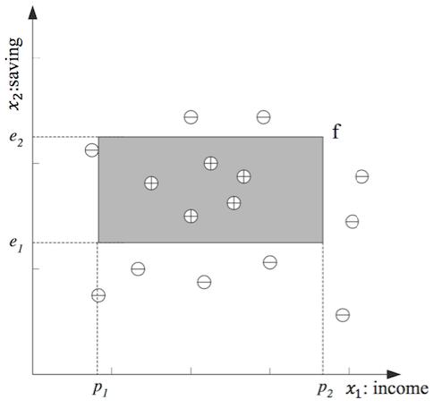
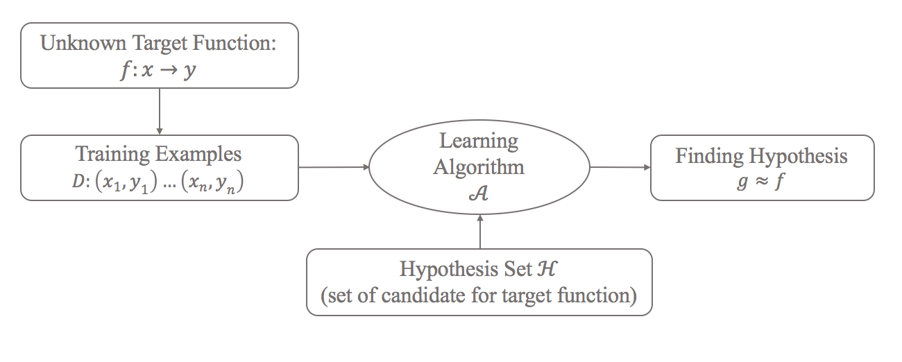

機器學習(Machine Learning)1：Introduction
MARCH 21,2017
1.什麼是機器學習？
⟪Machine learning is programming computers to optimize a performance criterion using example data or past experience.⟫
廣義來說，機器學習是一門使計算機能自動學習，利用資料或經驗去優化一個目標的表現。明確來說，機器學習就是從大量的數據中，依目的選定適當學習方法下，自動找出數據內潛在的規律。憑這些規律達到預測未來(沒看過)的資料。
2.為什麼機器學習？
試想如果要寫一個樹的辨識系統，直覺的方法我們可以列出各種樹的特徵，讓電腦用我們定義的規則去判斷什麼是樹，但只要有一棵樹的特徵不在規則內就辨識失敗。這個方法沒有彈性且效率低落。回想人類是如何分辨樹，為什麼我們能輕易地在一張圖中認出樹而不會誤認成其他東西？人類學習過程依據書本或生活經驗對樹進行認知，累積經驗內化到記憶裡，然後無形中找出某種規律， 所以能輕易地分辨出樹。 反觀樹的辨識系統，我們能否把人類分辨樹的方法明確地告訴電腦或寫成演算法？應該很困難，因為我們也無法明確解釋自己是如何分辨樹。這時候，就可以使用機器學習。把各種樹的資料丟給電腦，讓電腦從中找到某種規律去判別樹。機器學習就是對人類學習過程的一種模擬，由上例可歸納出機器學習使用時機： 1.目標函數(target function)無法直接被定義 2.資料量夠大且存在某種不直觀的規律(underlying pattern)
3.如何機器學習？
舉銀行核發信用卡為例，信用卡一般會以分期方式付款，銀行通常會透過客戶過去的資料評估是否有能力償還卡債，而整個評估的流程稱為信用評分(Credit Scoring, Hand 1998)，可能採取的考量有年收入,存款,職業,年齡等。而我們的目的是想利用這些歷史資料來決定未來的顧客是否核發信用卡。 首先，x跟y代表銀行的歷史紀錄，x是銀行評估客戶的項目，代表資料的特徵，所以又稱feature space ;y是預測目標，代表顧客是否有拿到信用卡，通稱為label。我們的目的就是找到一個“目標函式”（target function)，當輸入客戶的特徵(x)後，就能判別是否發卡(y)。假設銀行員決定年收入(x1)和存款(x2)是判斷依據， 那我們的X可以表示為: 而我們的預測目標y，通過發卡為正，不通過為負 最後我們的歷史資料(training example)，D，可以表示成: 我們把D用一個二維的座標系統表示，而其相對應的位置(x1,x2)標記上預測目標y(+或-) ，如下圖，則經過剛剛的假設，我們可以預期年收入(x1)跟存款(x2)將會落在一個範圍內: (p1 ≤ income ≤ p2) AND (e1 ≤ saving ≤ e2)  以上這個式子就是我們要解的目標函數(target function)的“表示形式”，這個表現形式中的解集合稱為hypothesis set，而我們要求的f就是下圖矩形的區域，接下來利用演算法從hypothesis set中找到誤差最小的解，就是找到一組最適合參數(p1,p2,e1,e2)，來逼近f。然而真實情況下這個f是未知，因為我們不可能知道所有的母體參數，我們只能從已知的資料D這組樣本中，找出錯誤率最小的參數，最後當作目標函數(target function)來預測未來的資料。
4.總結
由上例可歸納出機器學習的流程： 1.對資料進行特徵萃取(feature extraction)，決定輸入變數x; 還有標記資料的預測目標(label)來決定y，這個步驟是處理訓練資料D的前置作業。 2.根據目的，利用資料的特徵x來建立目標函數f(target function)的模型，而目標函數的解集合(H)就是hypothesis set。 3.再利用演算法A找出目標函數模型中失誤最小的參數，就是從hypothesis set中找出最符合資料的解g，最後讓這個解當作f。
參考資料： 1.台大資工系副教授林軒田「機器學習基石」課程 2.Introduction to Machine Learning Second Edition Ethem Alpaydın